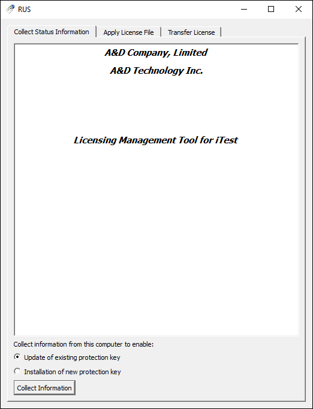

How to Use the Offline Developer Suite Trial License¶
Overview¶
The iTest installation comes with a 7 day trial license for the offline developer suite. This license will allow you to run a limited, offline version of iTest intended for app development. The 7 days of the trial will begin upon the first launch of iTest after install.
This version of iTest will have the following limitations:
- Hardware devices are not supported
- Up to 12,000 channels are supported
- Up to 2,000 user defined calculations are supported
- The following powertek.ini options must be set:
SystemType=IBS and Simulation=TRUE
- The iTest install serial number must be for the Offline Developer Suite
Extending the Trial License¶
To extend your trial license beyond 7 days, you will need to collaborate with an A&D representative.
Use the following instructions to generate a .c2v file to share with an A&D representative in order to extend your trail license beyond its 7 days:
- Navigate to AnDRus.exe, located in your $EXECUTEDIR. The RUS tool will launch:
RUS Tool

- Select Update of existing protection key, then click Collect Information.
- You will be prompted to save the .c2v file. Name the file after the cell that the license will be used in, then click Save.
- Email the .c2v file to your A&D representative. They will then use the .c2v file to update your license and create a .v2c file that will be emailed back to you.
- Save the .v2c file to your machine for later access.
- Launch AnDRus.exe and select the Apply License File tab.
- Click the ... button and open the A&D supplied .v2c file.
- Click the Apply Update button. When the update is finished you will see an “Update written successfully” message in the display area.
For further information, reference the Updating a Dongle and DongleUtil documentation.